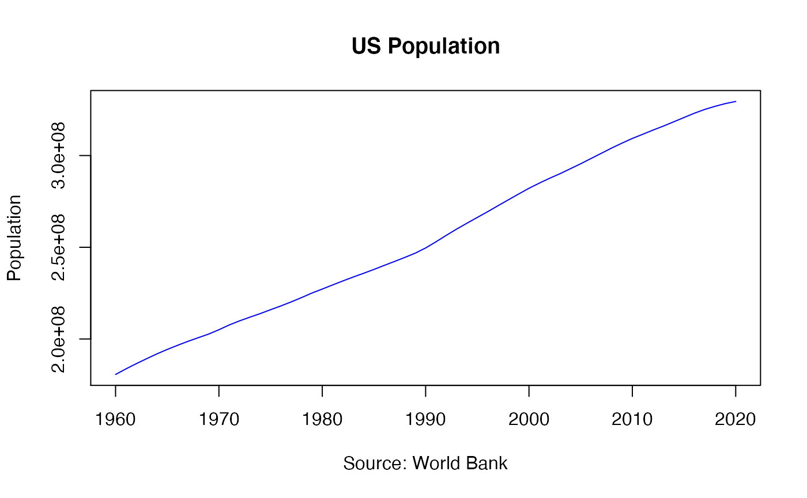

World population by country between 1960 to 2020
world_population
A data frame with 4 variables.
Country Name
Country abbreviations code
The year of the observation
Population
The World Bank Data website.
The dataset provides worldwide popluation values by country between 1960 and 2020
#> # A tibble: 6 x 4 #> country_name country_code year population #> <chr> <chr> <dbl> <dbl> #> 1 Aruba ABW 1960 54208 #> 2 Aruba ABW 1961 55434 #> 3 Aruba ABW 1962 56234 #> 4 Aruba ABW 1963 56699 #> 5 Aruba ABW 1964 57029 #> 6 Aruba ABW 1965 57357us_pop <- world_population %>% filter(country_code == "USA") plot(us_pop$year, us_pop$population, type = "l", main = "US Population", xlab = "Source: World Bank", ylab = "Population", col = "blue")